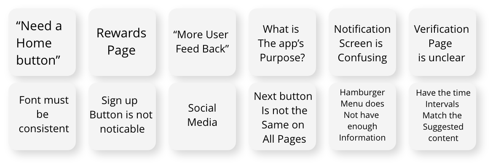

PRODUCTIVITY APP FOR CREATIVES
Case Study
Spark is an Android mobile application created during my UX/UI Certification course at Columbia University. This Case Study will go into detail how this app was designed to cater to creative individuals that have small periods of time to improve themselves.
UX Researcher
UX Designer
UI Designer
4 Weeks
Adobe Photoshop
Figma
Google Forms, Slides
InVision
Miro
Creative millennials need to work toward their passions in their free time because completing small tasks will help our users feel motivated to achieve their goals.
We began by posting & sending google form surveys on Facebook, Instagram, and Reddit in order to learn what are people’s hobbies & how people spend their free time.
We learned… Our user is between the Ages 19-30 years old, has creative hobbies, and utilizes Facebook & Instagram the most. Link to survey results
After synthesizing the survey data we conducted 6 interviews in order to learn more in depth if people between the ages of 18-35 years old can filter through personalized activity recommendations will they be more fulfilled creatively.
Create a productivity app for creative millennials to achieve their goals and to learn about their passions in small increments working toward incentives.
After defining the user and discovered their major pain point is filling short periods of time productively.
The scenario we framed our using this app is when they are waiting for public transportation, but does not want to aimlessly scroll on social media. Instead the user would open the “SPARK” app, designate a creative goal, click on a specific time frame, and watch, read or listen to the recommendation.
After researching the landscape of motivational apps we found that the majority of the apps utilize dark mode, which inspired us to design the app in dark mode. In addition we looked at fitness, food, and banking apps to see how they showcased their reward systems.
phrases, and stumbled upon “Find your Spark.” Spark became the new name.
After sending out our Low Fidelity Prototype to our users we found the major struggles for the users were: "what the purpose of the app was", onboarding process, content visibility, and incentives.
We then streamlined the design features from color, imagery, alignments, and typography. Most importantly we found a way to distinguish “SPARK” from every other motivation app by incentivizing the award progress catering to the specific goal.
ACCESSIBILITY FEATURES
We understand that there are creatives of all types and abilities. So, if given more time, we would have liked to include accessibility components into Spark for our users with disabilities. For instance, a screen reader for the visually impaired and subtitles/transcripts for the video and audio options.
COMMUNITY PAGE
Spark is an app to reach goals and learn about passions. We created the community section with the idea to keep users accountable by posting updates to their friends and acquaintances who they are connected with on Spark. In the future, we would like to build out the opportunity to connect the app with phone contacts, Instagram followers and Facebook friends, and the ability to search for other users to connect with in the app
UI DESIGN
As the project’s focus was heavily on the UX experience & research there were still UI elements we had to consider when building out the high fidelity prototype. Focusing on UI accessibility - typography, color, size, and imagery.